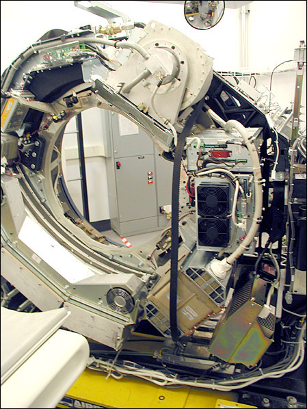
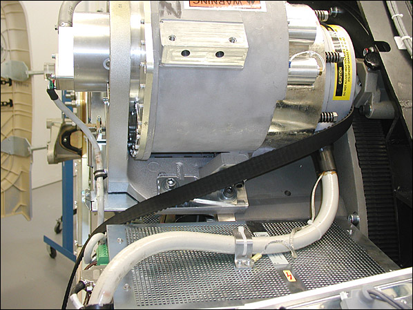

GEMS Proprietary Class: A
Direction 5117807-800, Rev# A
GEMS Proprietary Class: A |
| Required Persons | Preliminary Reqs | Procedure | Finalization |
|---|---|---|---|
| 1 | Timing Not Applicable | ~ 40 |
| Last Revised: | September 2004 |
| Item | Qty | Effectivity | Part# | Manufacturer | |
|---|---|---|---|---|---|
| 12 inch extension for hex key | 1 | - | - | - | |
| 5mm hex key | 1 | - | - | - | |
| 6mm hex key | 1 | - | - | - | |
| 8mm hex key | 1 | - | - | - | |
| 10mm hex key | 1 | - | - | - | |
No consumables required.
No replacement parts required.
| ELECTROCUTION HAZARD. | |
| HIGH VOLTAGE PRESENT. | |
| USE PROPER LOCKOUT/TAGOUT PROCEDURES BEFORE REPLACING COMPONENTS. |
| Follow ALL required safety and PPE procedures customary for your organization when working on this product. | |
| Condition | Reference | Eff |
|---|---|---|
Only trained service personnel should service the GE CT Scanner. | - | - |
Remove the gantry covers (see gantry cover replacement procedures if needed) and lower slipring cover.
| ELECTROCUTION HAZARD. | |
| HIGH VOLTAGE PRESENT. | |
| USE PROPER LOCKOUT/TAGOUT PROCEDURES BEFORE REPLACING COMPONENTS. |
| Always turn OFF the HVDC before the 120 VAC. Turning OFF 120 VAC power before HVDC power can result in equipment damage. | |
Turn off the three (3) main power switches (Axial Drive, HVDC, 120VAC) on the gantry’s Service Switch Panel. Remove all system power at the Main Disconnect panel and use proper Lockout/Tagout procedures.
Remove the Home Flag assembly to prevent damage.
Reference Home Flag and Sensor Board Assembly Replacementprocedure.
Remove the Axial Encoder to prevent damage to the encoder gear teeth.
Reference Axial Encoder Assembly Replacement procedure.
Using the 5mm hex key remove the three (3) screws that secure the Drive Gear Cover, and remove the Cover.
Rotate the tube to the 1:00 position. Do not engage the rotational lock.
Loosen the two (2) M12 screws with the 10mm hex key.
Reference Axial Drive Motor Assembly Replacement.
Using the 6mm hex key and the 12 inch extension, fully loosen the elongated hex screw to remove the drive belt from the drive gear.
See Illustration 1 in Axial Drive Motor Assembly Replacement.
Remove the drive belt from the drive gear.
Work the belt toward the table on the rotating assembly. Keep all slack at the tube side of the gantry.
Work the belt through the large gap to the right of the Tube, around the inverter and to the DAS (see Illustration 1).
Illustration 1: Axial Drive Belt Installation/Removal Critical Path

At this point the Belt slackens. Carefully work the belt around the rest of the rotating gantry, completing the removal process.
Illustration 2: Belt Path Around Tube

Install the Belt using the removal steps, 10 through 12, in reverse order.
Install the Home Flag and Axial Encoder.
Slide the Belt over the main Drive Gear and align it towards the back of the rotating assembly teeth. Check both top and bottom.
Work the belt through the pulley tensioner assembly and place on motor drive gear.
Tighten the elongated hex screw using a 6mm hex key and a 12 inch extension. Apply enough tension so the washer can be rotated with your fingers.
Rotate the Gantry by hand several times and recheck tension of washer. Make sure the belt does not slip off tensioning pulley and is tracking correctly toward the rear of the gantry.
Repeat step 5 and 6 as needed until the correct tension is achieved (when the washer can be turned by finger with some difficulty).
Tighten the two (2) M12 screws using a 10mm hex key to 30 Ft-lbs. This locks the tensioner assembly.
Ensure that the Home Flag Assembly (see Home Flag and Sensor Board Assembly) and the Axial Encoder Assembly (see Axial Encoder Assembly Replacement) have been installed and are functioning correctly.